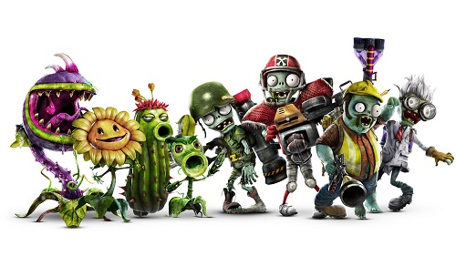
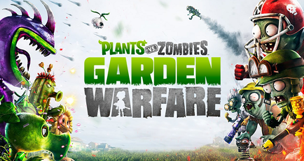

Se filtra Plants vs. Zombies: Garden Warfare 3

La existencia de Plants vs. Zombies: Garden Warfare 3 ha sido filtrada a través de un cómic de la serie a través de Amazon.
De acuerdo con la descripción del cómic Plants vs. Zombies: Garden Warfare Volume 2, el libro escrito por Paul Tobin tendrá la función de "conectar los videojuegos PvZ: GW2 y PvZ: GW3".

Esto indica que es probable que la distribuidora de la historieta no estaba enterada de que el título no ha sido anunciado oficialmente, mas parece ser una filtración de parte de una fuente oficial, así que solo falta esperar un poco para ver el anuncio oficial de la siguiente entrada de este juego.
